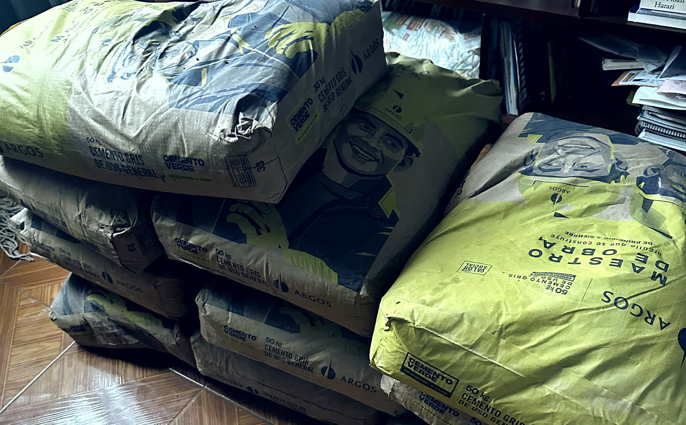

El ritmo nos levanta
Tumbenla
Y volvámosla a parar
Mapa del parche
CIUDAD ACTIVA
10% de la noche
L
La Terraza
Discoteca · Chipre
La noche del sábado
La Terraza
Esa soy yo
✓ Guardada
Esa soy yo
Esa soy yo
Esa soy yo
Esa soy yo
Esa soy yo
Las fotos de esa noche le quedan de recuerdo.
Noches
6
Sitios
3
Fotos guardadas
11
Aporte estimado
$ 0
Lo que han puesto sus noches.
Cuentas claras
A dónde va
la plata
Compramos el material nosotros y publicamos el recibo.

Cemento gris · 50 kg
Cuando se le pase el guayabo
Entre a la página y verifique
Con factura y todo
Que su parte sí llegó
Así usted sale, se parcha, rumbea, y de paso ayuda.
¿Qué chimba cierto?
Tumbenla
tumbenla.com
VEA,LAVUELTAES
SIMPLE.
ENTREALAPÁGINA,
MIRECUÁLESBARESLE
ENTRARONAESTAVUELTA,
YESCOJAUNO.
PÁRCHESECOMOSIEMPRE.
CONSUMIENDOAHÍYAESTÁ
PONIENDO,YLASFOTOS
LEQUEDANDERECUERDO.
DESPUÉSVUELVAYMIRE
CUÁNTOPUSOUSTED.
NOSOTROSCOMPRAMOSELMATERIAL,
YPUBLICAMOSLAFACTURA.